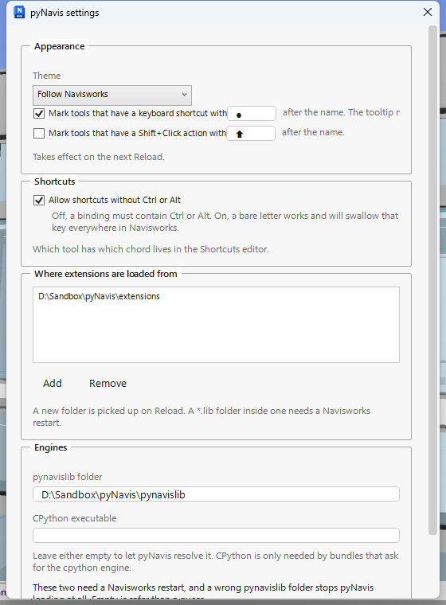

pyNavis panel
Settings
One window over the parts of pyNavis you are meant to change: theme, ribbon hints, where extensions load from, and the engine paths.
On the ribbonButton, pyNavis panel
NeedsNothing
What it does#
pyNavis keeps its configuration in one JSON file, %APPDATA%\pyNavis\config.json.
Most of that file is maintained by pyNavis itself. Settings is the window over the handful
of keys a person is meant to change, so nobody has to open the file in a text editor to
switch the theme or add an extension folder.

How to use it#
- Click Settings. The window opens with the current values.
- Appearance. Pick a theme, or leave it following Navisworks. Two checkboxes control the hints on button captions: a dot after a tool that has a keyboard shortcut, on by default, and an arrow after a tool that has a Shift+Click action, off by default. The box beside each checkbox is the glyph it draws. Leave a box empty and the default glyph is used; the checkbox is the only off switch.
- Shortcuts. One checkbox: whether a shortcut may be bound without Ctrl or Alt in it. Off, every chord must carry one of them, which keeps a stray letter from firing a tool while you type a viewpoint name.
- Where extensions are loaded from. Add or remove the folders pyNavis
scans for
*.extensionfolders. Two locations are always scanned whether listed or not:%APPDATA%\pyNavis\extensions, where the installer puts the shipped extension, and%PROGRAMDATA%\pyNavis\extensionswhen it exists. - Engines. The
pynavislibfolder and a CPython executable. Leave both empty unless you know why you are changing them; CPython is only used by bundles that declareengine: cpython. - Click Save. If an engine path changed, pyNavis says Navisworks needs a restart. Otherwise it offers to reload the ribbon there and then.
Limitations#
- Which tool holds which shortcut is not edited here. That is the Shortcuts editor's job.
- Engine paths take effect only after Navisworks restarts. A Reload cannot swap a Python engine under a running ribbon.
- The window edits only the keys listed above. Shortcut overrides, dock panel slot assignments and window layouts stay in the file untouched, because the tools that own them would otherwise fight the window for the same keys.
Other uses#
- Point pyNavis at a shared network folder of extensions so a whole team gets the same tools, then keep your own experiments in a second, local folder.
- Turn the Shift+Click arrow on while learning the tab, then off again once you know which tools carry settings.
Good to know#
Cancel says nothing and changes nothing. Every key the window writes is described in the authoring guide's config.json reference, which is where to look if you would rather edit the file directly.